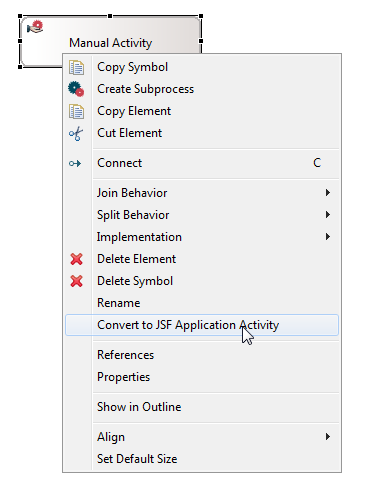
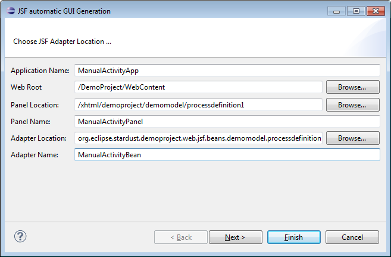
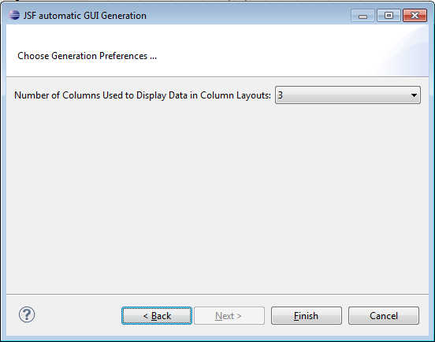
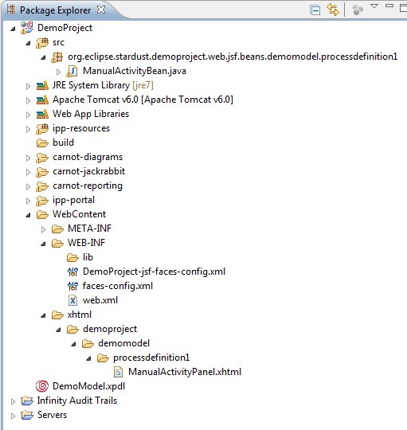

A conversion wizard is provided to automatically convert Manual activities to JSF interactive application activities.
To open the conversion wizard:

Figure: Convert Manual Activity
The dialog to generate the JSF GUI opens with the following entries:
In most of the cases, the JSF automatic GUI generation wizard fields will be already filled with matching information. Optionally you can change the default values of the fields.

Figure: JSF Conversion Wizard
The name (and id) of the new application that will be generated. The default value is derived from the <activity name> + "App" suffix.
This entry determines the root folder, where the Web project is located. The default value is derived from the "/" + <project name> + "/WebContent". If this entry is not valid, browse and select a valid workspace folder. Please make sure the selected folder is a dynamic Web project.
This represents the folder in the Web root where the generated JSF snippet will be placed. The default value is /xhtml. If the folder does not exist, a new one will be created.
The file name of the JSF snippet is determined in this field. The implicit extension of .xhtml will be attached. The default panel name is derived from the <activity name> + "Panel" suffix.
This entry represents the package name of the backing bean of the JSF panel. The default value is derived from "org.eclipse.stardust." + <project name> + ".web.jsf.beans".
Here the name of the backing bean of the JSF panel is filled in. The default value is derived from the <activity name> + "Bean" suffix.
Select the number of columns to be displayed in the Stardust Portal from the Number of Columns Used to Display Data in Column Layouts drop-down list. By default, data is displayed in three columns.

Figure: Generation Preferences
On execution the following objects will be generated:
| Field | Entry |
|---|---|
| URL | <panel location>/<panel name>.xhtml |
| Managed Bean Name | <adapter name> |
| Managed Bean Class | <adapter location>.<adapter name> |
| Completion Method | complete() |
The new structure in your package explorer will look like in the following example:

Figure: Added Files
Note that after undoing a converting process, the JSF application symbol is removed from the model, but the created classes will still remain in the project. After performing an undo operation and deleting the according packages and code, a redo cannot create the code again.
The created packages and code will also still remain in the project, after the according JSF application is deleted from the model.
An automatically created activity panel with input and output fields is created when running the activity in the Portal in case In and Out-data-mappings exist for the activity. For details on activity panels refer to chapter Working with interactive Activity Panels in the End User Handbook.